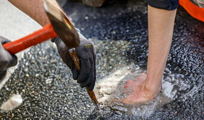

Start
Strona główna
Linki

Sposoby na ratowanie Ziemi:
- Recykling: Regularne sortowanie i recykling odpadów, takich jak plastik, szkło
, metal i papier, pomaga zmniejszyć ilość odpadów trafiających na wysypiska śmieci i zmniejsza zapotrzebowanie na surowce
naturalne.
- Oszczędzanie energii: Korzystaj z energooszczędnych urządzeń elektrycznych,
wyłączaj światła i urządzenia elektryczne, gdy ich nie używasz, oraz stosuj technologie oszczędzające energię, takie jak
żarówki LED.
- Transport publiczny i środki transportu alternatywne: Wybieraj transport
publiczny, rower lub chodź pieszo, aby zmniejszyć emisję spalin z samochodów, co przyczynia się do poprawy jakości powietrza.
- Sadzenie drzew: Sadzenie nowych drzew pomaga wychwycić dwutlenek węgla
z atmosfery, co może zmniejszyć efekt cieplarniany i poprawić jakość powietrza
- Redukcja zużycia wody: Oszczędzaj wodę poprzez naprawę przeciekających
kranów, korzystanie z efektywnych urządzeń oszczędzających wodę oraz ograniczanie czasu spędzanego pod prysznicem.